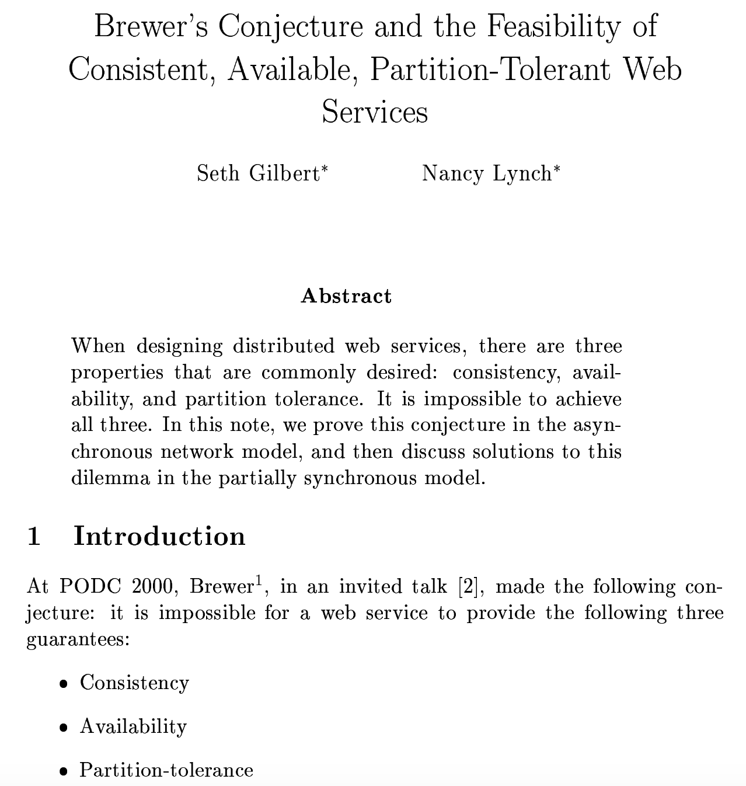
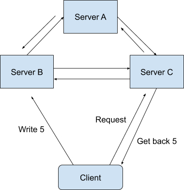
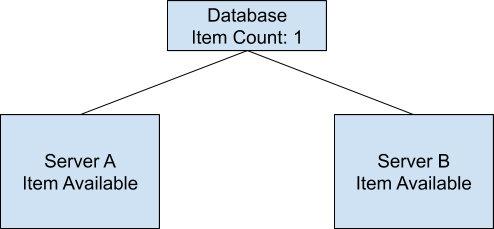
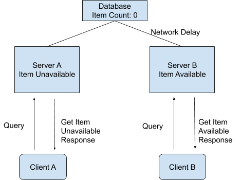
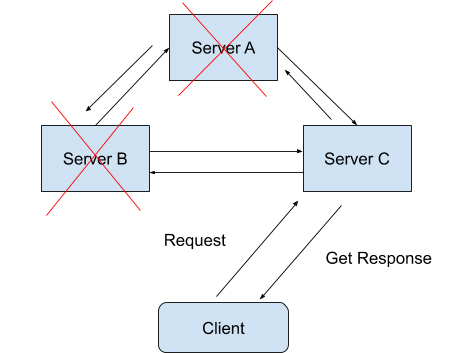
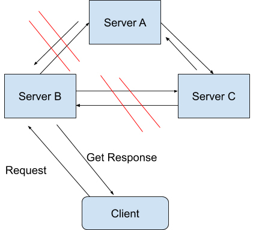
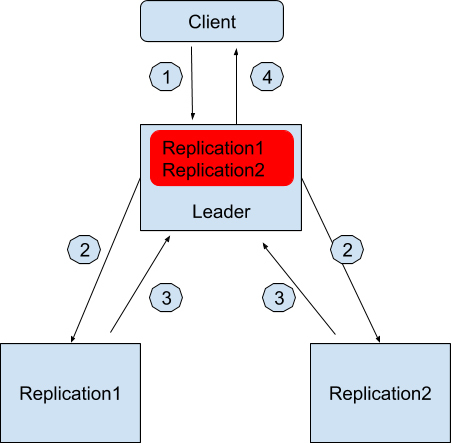
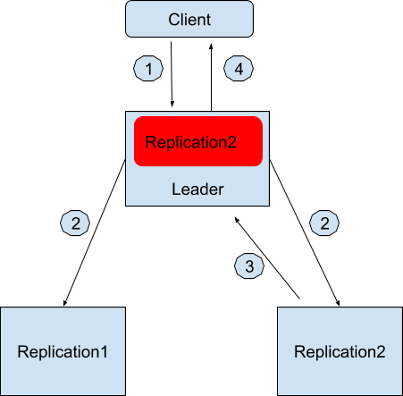
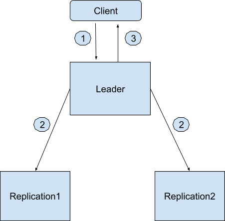

- 00 开篇词 从这里开始，带你走上硅谷一线系统架构师之路.md.html
- 01 为什么MapReduce会被硅谷一线公司淘汰？.md.html
- 02 MapReduce后谁主沉浮：怎样设计下一代数据处理技术？.md.html
- 03 大规模数据处理初体验：怎样实现大型电商热销榜？.md.html
- 04 分布式系统（上）：学会用服务等级协议SLA来评估你的系统.md.html
- 05 分布式系统（下）：架构师不得不知的三大指标.md.html
- 06 如何区分批处理还是流处理？.md.html
- 07 Workflow设计模式：让你在大规模数据世界中君临天下.md.html
- 08 发布_订阅模式：流处理架构中的瑞士军刀.md.html
- 09 CAP定理：三选二，架构师必须学会的取舍.md.html
- 10 Lambda架构：Twitter亿级实时数据分析架构背后的倚天剑.md.html
- 11 Kappa架构：利用Kafka锻造的屠龙刀.md.html
- 12 我们为什么需要Spark？.md.html
- 13 弹性分布式数据集：Spark大厦的地基（上）.md.html
- 14 弹性分布式数据集：Spark大厦的地基（下）.md.html
- 15 Spark SQL：Spark数据查询的利器.md.html
- 16 Spark Streaming：Spark的实时流计算API.md.html
- 17 Structured Streaming：如何用DataFrame API进行实时数据分析_.md.html
- 18 Word Count：从零开始运行你的第一个Spark应用.md.html
- 19 综合案例实战：处理加州房屋信息，构建线性回归模型.md.html
- 20 流处理案例实战：分析纽约市出租车载客信息.md.html
- 21 深入对比Spark与Flink：帮你系统设计两开花.md.html
- 22 Apache Beam的前世今生.md.html
- 23 站在Google的肩膀上学习Beam编程模型.md.html
- 24 PCollection：为什么Beam要如此抽象封装数据？.md.html
- 25 Transform：Beam数据转换操作的抽象方法.md.html
- 26 Pipeline：Beam如何抽象多步骤的数据流水线？.md.html
- 27 Pipeline I_O_ Beam数据中转的设计模式.md.html
- 28 如何设计创建好一个Beam Pipeline？.md.html
- 29 如何测试Beam Pipeline？.md.html
- 30 Apache Beam实战冲刺：Beam如何run everywhere_.md.html
- 31 WordCount Beam Pipeline实战.md.html
- 32 Beam Window：打通流处理的任督二脉.md.html
- 33 横看成岭侧成峰：再战Streaming WordCount.md.html
- 34 Amazon热销榜Beam Pipeline实战.md.html
- 35 Facebook游戏实时流处理Beam Pipeline实战（上）.md.html
- 36 Facebook游戏实时流处理Beam Pipeline实战（下）.md.html
- 37 5G时代，如何处理超大规模物联网数据.md.html
- 38 大规模数据处理在深度学习中如何应用？.md.html
- 39 从SQL到Streaming SQL：突破静态数据查询的次元.md.html
- 40 大规模数据处理未来之路.md.html
- FAQ第一期 学习大规模数据处理需要什么基础？.md.html
- FAQ第三期 Apache Beam基础答疑.md.html
- FAQ第二期 Spark案例实战答疑.md.html
- 加油站 Practice makes perfect！.md.html
- 结束语 世间所有的相遇，都是久别重逢.md.html
- 捐赠
09 CAP定理：三选二，架构师必须学会的取舍
你好，我是蔡元楠。
今天我要与你分享的主题是CAP定理。
在分布式系统的两讲中，我们一起学习到了两个重要的概念：可用性和一致性。
而今天，我想和你讲解一个与这两个概念相关，并且在设计分布式系统架构时都会讨论到的一个定理——CAP定理（CAP Theorem）。
CAP定理
CAP这个概念最初是由埃里克·布鲁尔博士（Dr. Eric Brewer）在2000年的ACM年度学术研讨会上提出的。
如果你对这次演讲感兴趣的话，可以翻阅他那次名为“Towards Robust Distributed Systems”的演讲deck。
在两年之后，塞思·吉尔伯特（Seth Gilbert）和麻省理工学院的南希·林奇教授（Nancy Ann Lynch）在他们的论文“Brewer’s conjecture and the Feasibility of Consistent, Available, Partition-Tolerant Web Services”中证明了这一概念。

他们在这篇论文中证明了：在任意的分布式系统中，一致性（Consistency），可用性（Availability）和分区容错性（Partition-tolerance）这三种属性最多只能同时存在两个属性。
下面，我来为你解读一下这三种属性在这篇论文里的具体意思。
C属性：一致性
一致性在这里指的是线性一致性（Linearizability Consistency）。在线性一致性的保证下，所有分布式环境下的操作都像是在单机上完成的一样，也就是说图中Sever A、B、C的状态一直是一致的。

打个比方，现在有两个操作（Operation），操作A和操作B，都需要在同一个分布式系统上完成。
我们假设操作A作用在系统上的时候，所看见的所有系统状态（State）叫作状态A。而操作B作用在系统上的时候，所看见的所有系统状态叫作状态B。
如果操作A是在操作B之前发生的，并且操作A成功了。那么系统状态B必须要比系统状态A更加新。
可能光看理论的话你还是会觉得这个概念有点模糊，那下面我就以一个具体例子来说明吧。
假设我们设计了一个分布式的购物系统，在这个系统中，商品的存货状态分别保存在服务器A和服务器B中。我们把存货状态定义为“有货状态”或者“无货状态”。在最开始的时候，服务器A和服务器B都会显示商品为有货状态。

等一段时间过后，商品卖完了，后台就必须将这两台服务器上的商品状态更新为无货状态。
因为是在分布式的环境下，商品状态的更新在服务器A上完成了，显示为无货状态。而服务器B的状态因为网络延迟的原因更新还未完成，还是显示着有货状态。
这时，恰好有两个用户使用着这个购物系统，先后发送了一个查询操作（Query Operation）到后台服务器中查询商品状态。
我们假设是用户A先查询的，这个查询操作A被发送到了服务器A上面，并且成功返回了商品是无货状态的。用户B在随后也对同一商品进行查询，而这个查询操作B被发送到了服务器B上面，并且成功返回了商品是有货状态的。

我们知道，对于整个系统来说，商品的系统状态应该为无货状态。而操作A又是在操作B之前发送并且成功完成的，所以如果这个系统有线性一致性这个属性的话，操作B所看到的系统状态理论上应该是无货状态。
但在我们这个例子中，操作B却返回了有货状态。所以我们说，这个分布式的购物系统并不满足论文里所讲到的线性一致性。
聊完了一致性，我们一起来看看可用性的含义。
A属性：可用性
可用性的概念比较简单，在这里指的是在分布式系统中，任意非故障的服务器都必须对客户的请求产生响应。
当系统满足可用性的时候，不管出现什么状况（除非所有的服务器全部崩溃），都能返回消息。

也就是说，当客户端向系统发送请求，只要系统背后的服务器有一台还未崩溃，那么这个未崩溃的服务器必须最终响应客户端。
P属性：分区容错性
在了解了可用性之后，你还需要了解分区容错性。它分为两个部分，“分区”和“容错”。
在一个分布式系统里，如果出现一些故障，可能会使得部分节点之间无法连通。由于这些故障节点无法联通，造成整个网络就会被分成几块区域，从而使数据分散在这些无法连通的区域中的情况，你可以认为这就是发生了分区错误。

如图所示，如果你要的数据只在Sever A中保存，当系统出现分区错误，在不能直接连接Sever A时，你是无法获取数据的。我们要“分区容错”，意思是即使出现这样的“错误”，系统也需要能“容忍”。也就是说，就算错误出现，系统也必须能够返回消息。
分区容错性，在这里指的是我们的系统允许网络丢失从一个节点发送到另一个节点的任意多条消息。
我们知道，在现代网络通信中，节点出现故障或者网络出现丢包这样的情况是时常会发生的。
如果没有了分区容错性，也就是说系统不允许这些节点间的通讯出现任何错误的话，那我们日常所用到的很多系统就不能再继续工作了。
所以在大部分情况下，系统设计都会保留P属性，而在C和A中二选一。
论文中论证了在任意系统中，我们最多可以保留CAP属性中的两种，也就是CP或者AP或者CA。关于具体的论证过程，如果你感兴趣的话，可以自行翻阅论文查看。
你可能会问，在我们平常所用到的开发架构中，有哪些系统是属于CP系统，有哪些是AP系统又有哪些是CA系统呢？我来给你介绍一下：
- CP系统：Google BigTable, Hbase, MongoDB, Redis, MemCacheDB，这些存储架构都是放弃了高可用性（High Availablity）而选择CP属性的。
- AP系统：Amazon Dynamo系统以及它的衍生存储系统Apache Cassandra和Voldemort都是属于AP系统
- CA系统：Apache Kafka是一个比较典型的CA系统。
我在上面说过，P属性在现代网络时代中基本上是属于一个必选项，那为什么Apache Kafka会放弃P选择CA属性呢？我来给你解释一下它的架构思想。
放弃了P属性的Kafka Replication
在Kafka发布了0.8版本之后，Kafka系统引入了Replication的概念。Kafka Relocation通过将数据复制到不同的节点上，从而增强了数据在系统中的持久性（Durability）和可用性（Availability）。在Kafka Replication的系统设计中，所有的数据日志存储是设计在同一个数据中心（Data Center）里面的，也就是说，在同一个数据中心里网络分区出现的可能性是十分之小的。
它的具体架构是这样的，在Kafka数据副本（Data Replication）的设计中，先通过Zookeeper选举出一个领导者节点（Leader）。这个领导者节点负责维护一组被称作同步数据副本（In-sync-replica）的节点，所有的数据写入都必须在这个领导者节点中记录。
我来举个例子，假设现在数据中心有三台服务器，一台被选为作为领导者节点，另外两台服务器用来保存数据副本，分别是Replication1和Replication2，它们两个节点就是被领导者节点维护的同步数据副本了。领导者节点知道它维护着两个同步数据副本。
如果用户想写入一个数据，假设是“Geekbang”
用户会发请求到领导者节点中想写入“Geekbang”。
领导者节点收到请求后先在本地保存好，然后也同时发消息通知Replication1和Replication2。
Replication1和Replication2收到消息后也保存好这条消息并且回复领导者节点写入成功。
领导者节点记录副本1和副本2都是健康（Healthy）的，并且回复用户写入成功。
红色的部分是领导者节点本地日志，记录着有哪些同步数据副本是健康的。

往后用户如果想查询写入的数据，无论是领导者节点还是两个副本都可以返回正确同步的结果。
那假如分区出现了该怎么办呢？例如领导者节点和副本1无法通讯了，这个时候流程就变成这样了。
用户会发请求到领导者节点中想写入“Geekbang”。
领导者节点收到请求后先在本地保存好，然后也同时发消息通知Replication1和Replication2。
只有Replication2收到消息后也保存好这条消息并且回复领导者节点写入成功。
领导者节点记录副本2是健康的，并且回复用户写入成功。
同样，红色的部分是领导者节点本地日志，记录着有哪些同步数据副本是健康的。

如果所有副本都无法通讯的时候，Apache Kafka允许系统只有一个节点工作，也就是领导者节点。这个时候所有的写入都只保存在领导者节点了。过程如下，
用户会发请求到领导者节点中想写入“Geekbang”。
领导者节点收到请求后先在本地保存好，然后也同时发消息通知Replication1和Replication2。
没有任何副本回复领导者节点写入成功，领导者节点记录无副本是健康的，并且回复用户写入成功。

当然，在最坏的情况下，连领导者节点也挂了，Zookeeper会重新去寻找健康的服务器节点来当选新的领导者节点。
小结
通过今天的学习，我们知道在CAP定理中，一致性，可用性和分区容错性这三个属性最多只能选择两种属性保留。CAP定理在经过了差不多20年的讨论与演化之后，大家对这三个属性可能会有着自己的一些定义。
例如在讨论一致性的时候，有的系统宣称自己是拥有C属性，也就拥有一致性的，但是这个一致性并不是论文里所讨论到的线性一致性。
在我看来，作为大规模数据处理的架构师，我们应该熟知自己的系统到底应该保留CAP中的哪两项属性，同时也需要熟知，自己所应用到的平台架构是保留着哪两项属性。
思考题
如果让你重新设计微博系统中的发微博功能，你会选择CAP的哪两个属性呢？为什么呢？
欢迎你把答案写在留言区，与我和其他同学一起讨论。
如果你觉得有所收获，也欢迎把文章分享给你的朋友。
© 2019 - 2023 Liangliang Lee. Powered by gin and hexo-theme-book.